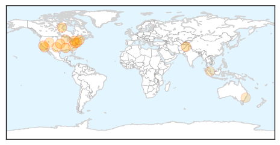
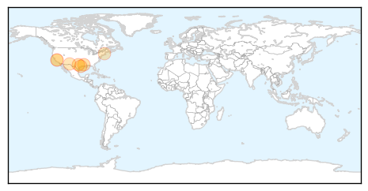
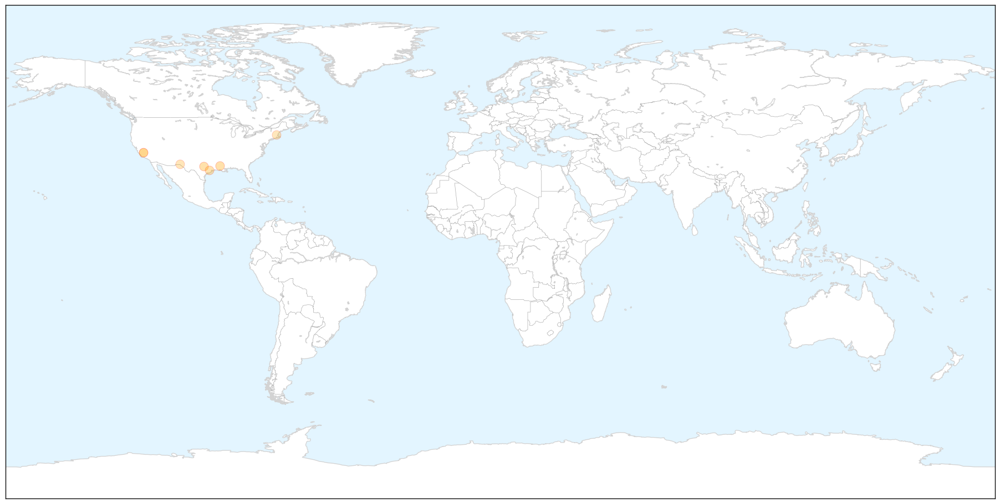

Influenza
30-Day Web Trend
3 alerts, 0 warnings

30-Day Twitter Trend
1 alerts, 0 warnings

Article Locations
Article Confidences
Top Articles:
- 0.999
- 5 Bogus Excuses People Use to Avoid the Flu Vaccine
- 0.997
- Enterovirus EV-D68: All About The Respiratory Illness Affecting Hundreds Of US Children
- 0.997
- NJ preparing for virus that is sickening Midwest
- 0.996
- The Daily News of Newburyport: News
- 0.996
- What You Need to Know about Virus Sweeping the Midwest
- 0.990
- States prepping for virus sickening Midwest
- 0.987
- Local health officials on lookout for virus that makes children severely ill
- 0.980
- News Scan for Sep 10, 2014
- 0.967
- Colorado among 10 states asking CDC for help with enterovirus 68
- 0.961
- Uncommon respiratory virus may have hit Buffalo-area children
- 0.919
- Texas, Lubbock likely still enterovirus D68-free
- 0.799
- County health officials get ready to start administering flu vaccines
- 0.798
- Sniffles common in Utah due to respiratory virus outbreak
- 0.757
- Rare respiratory virus spreading to kids across country
- 0.664
- Australian Museum Eureka Prizes: Hendra virus vaccine and helicopter 'floaties' take out top gongs
- 0.589
- Gastroenteritis Strikes Passengers on Sea Princess : Cruise Law News
Top Tweets:
-
No tweets found for Sep 10, 2014
West Nile Virus
30-Day Web Trend
1 alerts, 0 warnings

30-Day Twitter Trend
0 alerts, 0 warnings

Article Locations

X

Article Confidences

Top Articles:
- 0.988
- Louisiana health department reports two more West Nile deaths
- 0.977
- West Nile virus reported in Sugar Land
- 0.972
- West Nile outbreak hits California's Orange County
- 0.920
- Mosquitoes test positive for West Nile virus in Sugar Land
- 0.818
- El Paso health department confirms 5 new cases of West Nile virus; other mosquito-borne illnesses also detected
- 0.790
- 2nd human case of West Nile Virus confirmed in Mass.
- 0.550
- West Nile virus outbreak hits California's Orange County
Top Tweets:
-
No tweets found for Sep 10, 2014